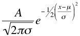

The Gaussian Peak Fitting tool was developed to support the calculation of the coefficients to the sigma function in the Deconvolution Tool. The sigma function models the peak width variability in trace data and has the following form:
sigma(x) = a + bx + cx^2
Using the tool

In the data view window, drag over a peak in the trace. It will be plotted in the viewing window in the tool inspector. Select Fit. A Gaussian will be fit to the peak calculating the scale (A), width (sigma) and peak center (mu):

The position or center of the peak (mu) is recorded along with the calculated peak width (sigma) in the file ~/gaussPeaks. This file is located in the root of the user account directory.
Each time a peak is selected in the data view window followed by the pressing of the Fit button, the newly calculated peak position and sigma are appended to the gaussPeaks file.
The Clear gaussPeaks file button will empty the contents of the gaussPeaks file.